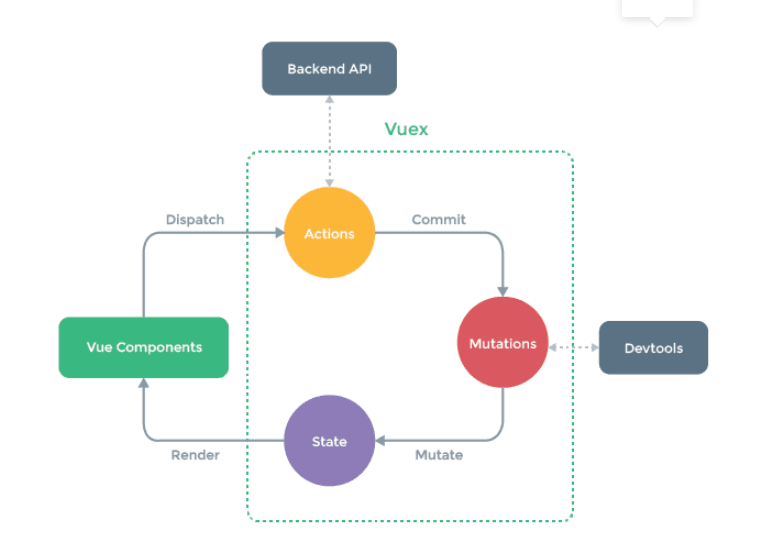

一、简介
Vuex是一个专为Vue开发的应用程序的状态管理模式，它采用集中式存储管理应用的所有组件的状态，并以相应的规则保证状态以一种可预测的方式发生变化。
简而言之，Vuex采用类似全局对象的形式来管理所有组件的公用数据，如果想修改这个全局对象的数据，得按照Vuex提供的方式来修改（不能自己随意用自己的方式来修改）。
二、优点
Vuex状态管理跟使用传统全局变量的不同之处：
Vuex的状态存储是响应式的：就是当你的组件使用到了这个Vuex的状态，一旦它改变了，所有关联的组件都会自动更新相对应的数据，这样开发者省事很多。
不能直接修改Vuex的状态：如果是个全局对象变量，要修改很容易，但是在Vuex中不能这样做，想修改就得使用Vuex提供的唯一途径：显示地提交（commit）mutations来实现修改
三、步骤
- 安装Vuex
- 创建仓库Store并在目录下面创建index.js文件
- 在index.js里面引用vuex
import Vue from 'vue' import Vuex from 'vuex' Vue.use(Vuex) const state = { count :5//总数：5 people:{} } const mutations = { increment(state,value){ state.count += value }, const getters = { newCount:state => state.count * 3 }, updatePeople(state,value){ state.people=value } const actions = { getParamSync (context,obj) { // 处理异步 setTimeout(() => { context.commit('updatePeople',obj)//context是action提供的对象和state类似，有commit方法 }, 1000); } } export default new Vuex.Store({ state, mutations, getters, actions })
Vuex的作用类似全局对象，Vuex 使用单一状态树，用一个对象State包含了整个应用层级的所有状态，你可以理解为这些状态就是一堆全局变量和数据。
export default {
methods:{
getVal (event) {
let value = 1
// 1.通过commit提交一个名为increment的mutation
// this.$store.commit('increment', value)
// 2.通过this.$store.dispatch提交名为getParamSync的action
this.$store.dispatch('getParamSync', { name, sex, age })
}
}
computed: {
count () {
// 1. 获取原来的count
return this.$store.state.people
// 2. 获取新的count
// return this.$store.getters.newCount
}
}
}
关键语句
- this.$store.state.count//获取state里面的属性
- this.$store.getters.newCount getters： 可以认为，getters 是store的计算属性，类似于computed,对state里的数据进行一些过滤，改造等等 假设我们要在state.count的基础上派生出一个新的状态newCount出来，就适合使用我们的 getters getters 接受 state 作为其第一个参数
- this.$store.commit('increment', value)
- increment是mutations里面注册的type
- value是传入进去的值
- this.$store.dispatch('getParamSync', { name, sex, age })
- getParamSync是actions里面的type
- { name, sex, age }是传入的值，
- action用来解决异步流程来改变state数据。而matution是直接进行同步操作的，如果你在mutations里进行异步操作，你会发现没用，并不会起任何效果只有通过action=>mutations=>states,这个流程进行操作,具体步骤如下
其他
为了配合Vue的响应式数据，我们在Mutations的方法中，应当使用Vue提供的方法来进行操作。
- Vue.set(state,"age",15)对state对象中添加一个age成员
- Vue.delete(state,'age')//将刚刚添加的age成员删除